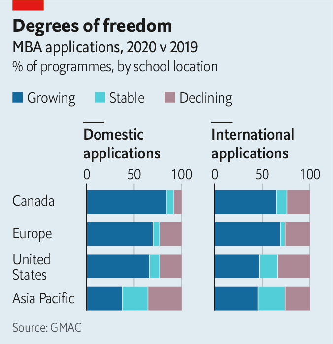

Text
2021-02-08T15:31:40+00:00
Business schools
商学院
商學院
The class of covid-19
新冠班
新冠班
Once endangered, the MBA is emerging stronger from the pandemic
一度濒危的MBA在疫情中东山再起
一度瀕危的MBA在疫情中東山再起

EDIEAL PINKER, deputy dean of the Yale School of Management, bristles at the suggestion that the MBA, long seen as a stepping stone to corporate success, has been made less relevant by the covid-19 crisis. The traditional two-year degree remains vital, he insists. “Do you think the problems the pandemic created for society and the economy are narrow specialised problems or complex ones that cut across sectors and disciplines?”
MBA课程长久以来都被视为通向企业成功的垫脚石，但有人认为它因为新冠危机地位下降了。对此，耶鲁大学管理学院的副院长埃迪尔·平克（Edieal Pinker）有点恼火。他坚持认为这一传统的两年制学位仍然至关重要。“你认为疫情给社会和经济造成的问题是狭隘的专业问题，还是跨部门、跨学科的复杂问题？”
MBA課程長久以來都被視為通向企業成功的墊腳石，但有人認為它因為新冠危機地位下降了。對此，耶魯大學管理學院的副院長埃迪爾·平克（Edieal Pinker）有點惱火。他堅持認為這一傳統的兩年制學位仍然至關重要。“你認為疫情給社會和經濟造成的問題是狹隘的專業問題，還是跨部門、跨學科的複雜問題？”
His words would have sounded odd a year ago. The MBA was falling out of fashion. With the global economy booming, the opportunity cost of this pricey degree (top schools charge $100,000 or more a year) did not seem worthwhile to many. Some schools could not cover their expenses. In 2019 the University of Illinois said it would end its residential MBA programme. Dozens of middling schools have done the same in recent years.
如果是在一年前，他的话听起来会很奇怪。MBA那时正渐渐过时。全球经济繁荣之时，这一昂贵学位的机会成本（顶级商学院每年收费10万美元甚至更多）对许多人来说似乎并不划算。一些商学院入不敷出。2019年，伊利诺伊大学表示将停办全日制MBA项目。近年来，已经有几十家中游的商学院这么做了。
如果是在一年前，他的話聽起來會很奇怪。MBA那時正漸漸過時。全球經濟繁榮之時，這一昂貴學位的機會成本（頂級商學院每年收費10萬美元甚至更多）對許多人來說似乎並不划算。一些商學院入不敷出。2019年，伊利諾伊大學表示將停辦全日制MBA項目。近年來，已經有幾十家中游的商學院這麼做了。
Surely Mr Pinker’s defence of the MBA seems even odder in the new pandemic reality? On the contrary. “Students held up and schools stepped up,” says Sangeet Chowfla, head of the Graduate Management Admission Council (GMAC), an industry body. GMAC’s latest annual global survey of more than 300 business schools found that 66% of programmes saw applications rise. Has covid-19 saved the MBA?
在疫情肆虐的新局面中，平克为MBA所做的辩护想必会更显奇怪吧？恰恰相反。“学生们坚持住了，学校再上层楼。”行业团体美国管理专业研究生入学考试委员会（GMAC）的负责人桑吉特·乔弗拉（Sangeet Chowfla）表示。GMAC对全球300多所商学院的最新年度调查表明，66%的课程申请人数上升。新冠病毒拯救了MBA吗？
在疫情肆虐的新局面中，平克為MBA所做的辯護想必會更顯奇怪吧？恰恰相反。“學生們堅持住了，學校再上層樓。”行業團體美國管理專業研究生入學考試委員會（GMAC）的負責人桑吉特·喬弗拉（Sangeet Chowfla）表示。GMAC對全球300多所商學院的最新年度調查表明，66%的課程申請人數上升。新冠病毒拯救了MBA嗎？
At first the virus looked lethal. Lectures moved online, team exercises became socially distant and study-trips abroad were cancelled. That diminished the value of the MBA experience, which is “greatly enhanced by the opportunity to expand and diversify one’s professional network through in-person interactions”, says Scott DeRue, dean of the University of Michigan’s Ross School of Business. Covid-19 restrictions hurt what Ilian Mihov, dean of INSEAD, a French school with campuses in Fontainebleau, Singapore and Abu Dhabi, calls “horizontal learning”—working in teams or discussing the day’s lessons over coffee. Ominously, INSEAD’s most popular MBA course last year was “Psychological Issues in Management”. “[I miss] interacting and having fun,” laments a student at New York University’s Stern School of Business. Columbia Business School has disciplined 70 students who violated covid-19 rules on socialising by travelling to Turks and Caicos for the autumn break.
起初，新冠病毒看起来有致命影响。讲座转到了线上，小组练习要保持社交距离，去国外的游学也取消了。这些限制损害了修读MBA的价值，这种价值“因为让人有机会通过面对面互动来扩大并多样化自身职业人脉而获得极大提升”，密歇根大学罗斯商学院的院长斯科特·德鲁（Scott DeRue）表示。新冠的限制损害了欧洲工商管理学院（INSEAD）院长伊利安·米霍夫（Ilian Mihov）所说的“横向学习”，也就是团队合作，或是一边喝咖啡一边讨论当天的课程。这家法国商学院在枫丹白露、新加坡和阿布扎比都有校区。欧洲工商管理学院去年最受欢迎的MBA课程是“管理中的心理问题”，仿佛是个不祥的预兆。“（我怀念）与人交流、享受乐趣。”纽约大学斯特恩商学院的一位学员哀叹道。哥伦比亚商学院处罚了70名违反新冠社交规定的学员，因为他们在秋假期间前往特克斯和凯科斯群岛（Turks and Caicos）旅游。
起初，新冠病毒看起來有致命影響。講座轉到了線上，小組練習要保持社交距離，去國外的遊學也取消了。這些限制損害了修讀MBA的價值，這種價值“因為讓人有機會通過面對面互動來擴大並多樣化自身職業人脈而獲得極大提升”，密歇根大學羅斯商學院的院長斯科特·德魯（Scott DeRue）表示。新冠的限制損害了歐洲工商管理學院（INSEAD）院長伊利安·米霍夫（Ilian Mihov）所說的“橫向學習”，也就是團隊合作，或是一邊喝咖啡一邊討論當天的課程。這家法國商學院在楓丹白露、新加坡和阿布扎比都有校區。歐洲工商管理學院去年最受歡迎的MBA課程是“管理中的心理問題”，彷彿是個不祥的預兆。“（我懷念）與人交流、享受樂趣。”紐約大學斯特恩商學院的一位學員哀嘆道。哥倫比亞商學院處罰了70名違反新冠社交規定的學員，因為他們在秋假期間前往特克斯和凱科斯群島（Turks and Caicos）旅遊。
Some students, angry about social isolation and online education, demanded refunds. Many foreigners, a cash cow for Western schools, stayed away (see chart). Mr Chowfla points to the “one-flight dynamic”: horror stories about students kicked out of dorms getting stranded on layovers while returning home put many Asians off American schools.
一些学员对社交疏离和线上修课感到愤怒，要求退款。许多外国人退却了，他们可是西方商学院的摇钱树（见图表）。乔弗拉指出“单次航程动力”是其原由：学生被赶出宿舍、在归家途中滞留被困的恐怖故事让许多亚洲人对美国的商学院望而却步。
一些學員對社交疏離和線上修課感到憤怒，要求退款。許多外國人退卻了，他們可是西方商學院的搖錢樹（見圖表）。喬弗拉指出“單次航程動力”是其原由：學生被趕出宿舍、在歸家途中滯留被困的恐怖故事讓許多亞洲人對美國的商學院望而卻步。
America’s loss was Europe’s gain. With more direct connections to Asia, London Business School, HEC Paris and other top European schools reported rises in applications. Some Asian schools, too, benefited. They kept their doors open to international students, thanks to their countries’ better handling of the pandemic. Hong Kong University Business School (HKUBS) saw a surge in applications from North America and Europe in March. They tended to be students who aimed for MBAs in the West but picked Asia at the last moment, says Sachin Tipnis of HKUBS. Memories of the SARS epidemic of 2003 spurred HKUBS to act early. Rapid processing of visa applications and moving classes to larger lecture theatres allowed 90-95% of students to attend in person.
美国之失正是欧洲之得。随着和亚洲的直接联系越来越多，伦敦商学院、巴黎高等商学院和其他欧洲顶级商学院的申请人数都有所上升。一些亚洲的商学院也从中受益。它们所在的国家更好地应对了疫情，因此它们向国际学生持续敞开大门。3月，香港大学商学院收到的来自北美和欧洲的申请激增。该院的萨钦·蒂普尼斯（Sachin Tipnis）表示，这些学生原本大多计划申请西方的MBA课程，但在最后一刻选择了亚洲。对2003年SARS疫情的记忆促使该学院一早采取行动。快速处理签证申请，以及把课堂转移到更大的课室，让90%至95%的学生得以实地上课。
美國之失正是歐洲之得。隨着和亞洲的直接聯繫越來越多，倫敦商學院、巴黎高等商學院和其他歐洲頂級商學院的申請人數都有所上升。一些亞洲的商學院也從中受益。它們所在的國家更好地應對了疫情，因此它們向國際學生持續敞開大門。3月，香港大學商學院收到的來自北美和歐洲的申請激增。該院的薩欽·蒂普尼斯（Sachin Tipnis）表示，這些學生原本大多計劃申請西方的MBA課程，但在最後一刻選擇了亞洲。對2003年SARS疫情的記憶促使該學院一早採取行動。快速處理簽證申請，以及把課堂轉移到更大的課室，讓90%至95%的學生得以實地上課。
Travel and visa complications boosted domestic applications everywhere. In 2020 mainland applicants to China Europe International Business School (CEIBS), a top-rated business school in Shanghai, rose by 30%. The wish to stay local is driven by two things, explains Ding Yuan, its dean. The first is China’s economy, which grew last year while others shrank. That has made America and Europe a less attractive destination in general for ambitious managers. The second is a sense that the post-Trump West is less welcoming to Chinese.
旅行和签证的复杂性促使各地的国内申请增长。2020年，位于上海的顶级商学院中欧国际工商学院的大陆学生申请人数增加了30%。院长丁远解释说，学生希望留在本地有两个原因。一是因为中国经济，去年其他国家经济萎缩时中国仍在增长。这让美国和欧洲对于雄心勃勃的管理者来说吸引力减退。二是感觉到特朗普时代之后的西方社会不那么欢迎中国人了。
旅行和簽證的複雜性促使各地的國內申請增長。2020年，位於上海的頂級商學院中歐國際工商學院的大陸學生申請人數增加了30%。院長丁遠解釋說，學生希望留在本地有兩個原因。一是因為中國經濟，去年其他國家經濟萎縮時中國仍在增長。這讓美國和歐洲對於雄心勃勃的管理者來說吸引力減退。二是感覺到特朗普時代之後的西方社會不那麼歡迎中國人了。
Most surprising of all, given all that, American schools look poised for a banner 2021. After a few years of declining applications, MIT’s Sloan School of Management, Columbia Business School, the Wharton School of the University of Pennsylvania and other top American programmes now report double-digit growth. “We enrolled the largest full-time MBA class ever,” beams Madhav Rajan, dean of the University of Chicago Booth School of Business.
最令人惊讶的是，即便如此，美国商学院在2021年看起来还是将大放异彩。在连续几年申请人数下降之后，麻省理工学院斯隆管理学院、哥伦比亚商学院、宾夕法尼亚大学沃顿商学院和其他美国顶级商学院现在都录得两位数增长。芝加哥大学布斯商学院的院长马德哈夫·拉詹（Madhav Rajan）眉开眼笑地说：“我们招收了有史以来规模最大的全日制MBA班。”
最令人驚訝的是，即便如此，美國商學院在2021年看起來還是將大放異彩。在連續幾年申請人數下降之後，麻省理工學院斯隆管理學院、哥倫比亞商學院、賓夕法尼亞大學沃頓商學院和其他美國頂級商學院現在都錄得兩位數增長。芝加哥大學布斯商學院的院長馬德哈夫·拉詹（Madhav Rajan）眉開眼笑地說：“我們招收了有史以來規模最大的全日制MBA班。”
MBA applications typically rise in recessions, when a weaker job market means lower forgone salaries. But business schools deserve credit for adapting their business models—as their professors preach others to do. Many delayed the start of semesters, offered generous scholarships, waived exam requirements and liberalised policies on deferrals. Harvard Business School allowed students it admitted to postpone studies for one or two years. GMAC reckons that deferrals globally have shot up from about 3% to 7%.
MBA申请人数通常会在经济衰退时上升，因为就业市场疲软意味着所放弃的薪水也会减少。但是，值得称赞的是商学院调整了自身的商业模式——正如商学院教授们告诫其他人应做的那样。许多商学院推迟了开学时间，提供了丰厚的奖学金，免除了考试要求，并且放宽了延期政策。哈佛商学院允许已录取的学生推迟一到两年入学。GMAC估计全球延期率已经从3%飙升至7%。
MBA申請人數通常會在經濟衰退時上升，因為就業市場疲軟意味着所放棄的薪水也會減少。但是，值得稱讚的是商學院調整了自身的商業模式——正如商學院教授們告誡其他人應做的那樣。許多商學院推遲了開學時間，提供了豐厚的獎學金，免除了考試要求，並且放寬了延期政策。哈佛商學院允許已錄取的學生推遲一到兩年入學。GMAC估計全球延期率已經從3%飆升至7%。
Schools also boosted online and flexible degrees, which are surging, and integrated digital teaching into core MBA courses. Far from being “giant killers”, says Vijay Govindarajan of Dartmouth College’s Tuck School of Business, digital technology can help a top school “ensure its gold-plated MBA programme shines even brighter”. The Ross School is using tools akin to Netflix’s bespoke recommendations to create “personalised leadership and career development journeys” for students. And to graduates’ relief, recruiters are back. GMAC’s survey of firms that recruit at business schools found that 89% intended to hire MBAs in 2021, up from 77% last year. ■
商学院也在大力发展线上和灵活的学位课程，这类课程正在激增，它们还把数字化教学整合到核心MBA课程中。达特茅斯学院塔克商学院的维贾伊·戈文达拉扬（Vijay Govindarajan）表示，数字技术非但不是“巨人杀手”，反而可以帮助顶级商学院“确保它的MBA金字招牌更加闪亮”。罗斯商学院正在使用类似奈飞（Netflix）定制推荐的工具，为学生打造“个性化领导力和职业发展之旅”。而让毕业生们觉得欣慰的是，招聘企业又回来了。GMAC对在商学院招人的企业的调查发现，其中89%打算在2021年招聘MBA毕业生，而去年是77%。
商學院也在大力發展線上和靈活的學位課程，這類課程正在激增，它們還把數字化教學整合到核心MBA課程中。達特茅斯學院塔克商學院的維賈伊·戈文達拉揚（Vijay Govindarajan）表示，數字技術非但不是“巨人殺手”，反而可以幫助頂級商學院“確保它的MBA金字招牌更加閃亮”。羅斯商學院正在使用類似奈飛（Netflix）定製推薦的工具，為學生打造“個性化領導力和職業發展之旅”。而讓畢業生們覺得欣慰的是，招聘企業又回來了。GMAC對在商學院招人的企業的調查發現，其中89%打算在2021年招聘MBA畢業生，而去年是77%。